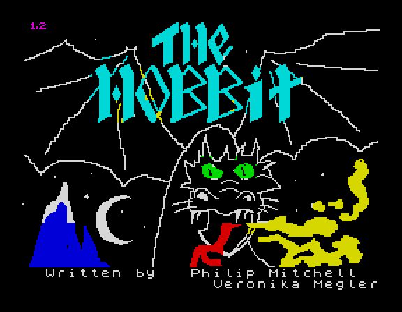
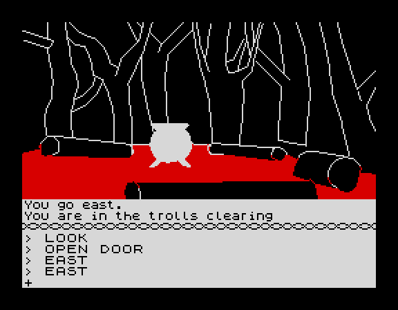
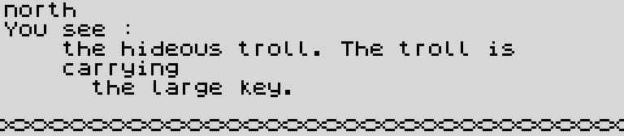
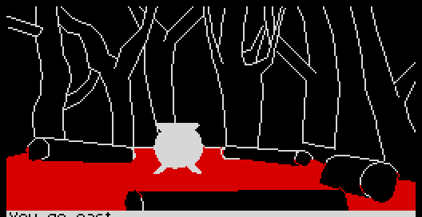
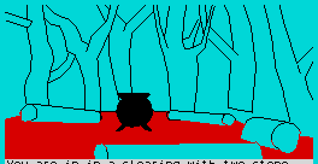
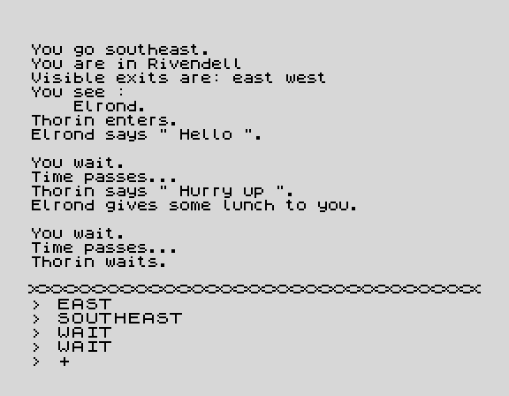
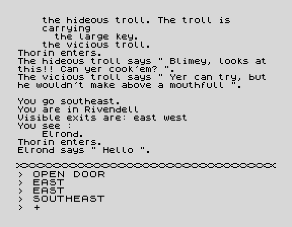
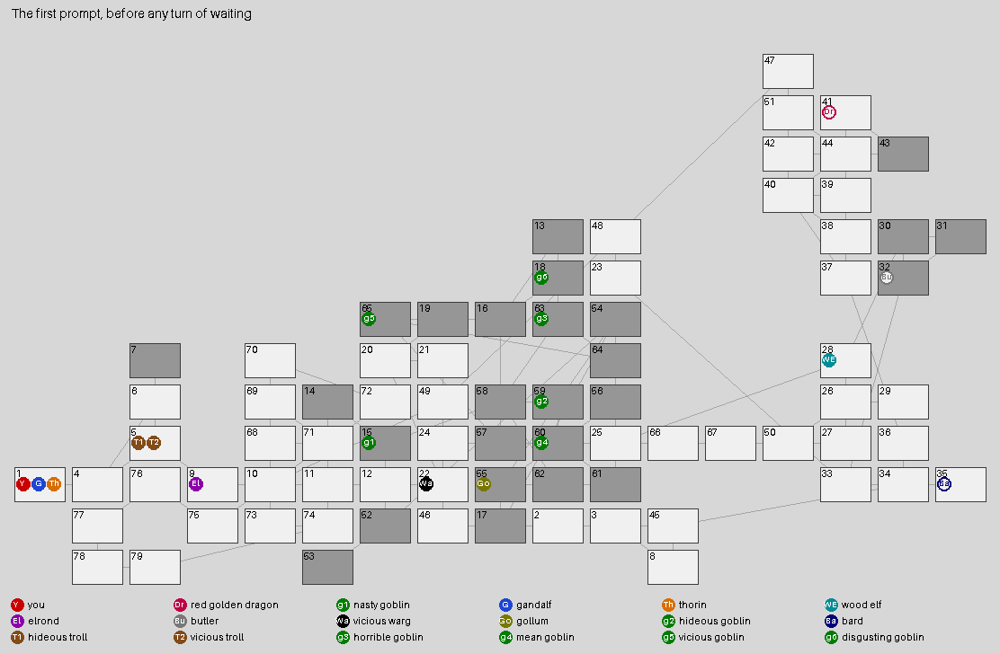
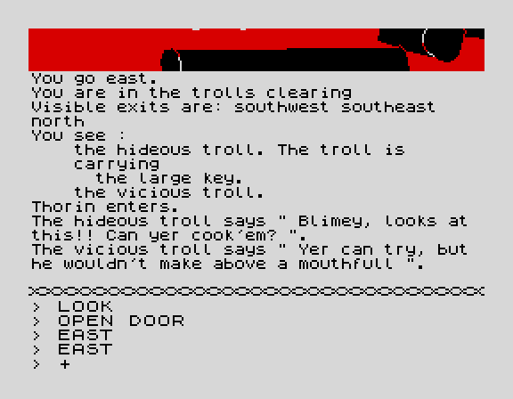
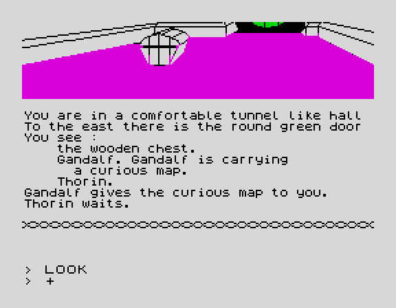

| Animations |
The Hobbit has no sprites and no frame loop: what moves on its screen is a picture being drawn, the story being typed out and scrolled, and the odd change of border. The pictures being drawn are on the Locations page (each picture's own entry in the listing shows its GIF), and the Patches page has the original and the fast-drawing patch side by side. This page has the rest, and one animation the screen never shows: the other characters walking about the map while the player waits.
Every animation here is a game played in SkoolKit's simulator when these pages were built, from the snapshot the tape leaves (the same start as scripts/hobbit_drive.py): commands typed a key at a time, held a tenth of a second with a gap of 0.06s, as the build's own playthrough types them, so the game echoes them; each key wait answered as soon as the game reaches it; and the screen memory and the border read at every frame interrupt, 69888 T-states apart. Each frame of a GIF lasts as long as the game took, at 3.5MHz and without the memory contention of a real Spectrum, which would be a little slower; where the game waits for a key for as long as it takes, the GIF holds the picture for a second or two and the table under it says so. Identical pictures in a row are one frame. The tables say what the game was doing, from where the program counter was at each frame interrupt.

The title is the loading screen, still on the screen from the tape: the game draws nothing of it. START keeps a copy of the objects, rooms and variables for new games, and NEW_GAME makes the border black and waits at $6C6D for a key -- N held there turns the pictures off for the game. Nothing on the title moves: no attribute has FLASH set and the only code running is the key test. Then CLEAR_SCREEN, the wavy DIVIDER across row 18, "> LOOK" printed in the input window, and the first turn is that LOOK (DO_LOOK, DESCRIBE_ROOM, DESCRIBE_LOCATION): the room's description goes into the story window first, then the picture is drawn -- 6.7s of it here -- then the game waits for a key, and only then does the rest of the description come, scrolling the story up over the picture. The whole opening, from the key to the first prompt, took 8.4s.
| From | For | What the game was doing |
|---|---|---|
| 0.00s | 0.00s | the title screen, waiting for a key (START) -- shown for 3.0s here; the game waits for as long as it takes |
| 0.00s | 0.22s | the turn: the parser, the characters, the story composed and printed |
| 0.22s | 6.75s | drawing the picture (DRAW_LOCATION_PICTURE) |
| 6.97s | 0.02s | the picture finished, waiting for a key (WAIT_FOR_ANY_KEY) -- shown for 1.5s here; the game waits for as long as it takes |
| 6.99s | 1.42s | the turn: the parser, the characters, the story composed and printed |
| 8.41s | the next prompt: the end |

The turn that walks into the trolls' clearing, from its picture finished and waiting for a key to the next prompt. Everything the story says goes through PRINT_CHAR to STORY_CHAR, a character at a time in the game's own six-pixel font (NARROW_CHAR), always on row 17; at the end of each line SCROLL_STORY moves rows 0-17 up by one, picture and all, which is how the story climbs over the picture. The input window below the divider is the ROM's font (INPUT_CHAR) and does not move. $6D13 (MAIN_LOOP) lets a turn's first nine lines out at once (NO_PAUSE_LINES, $B716); after that each line waits about half a second, or until a key, before it scrolls.
Measured in the same game played again and stopped at every character printed past PRINT_GATE: 297 characters and 11 line ends in the story window this turn, one every 4543 T-states (1.3ms) while a line is going out -- up to 15 in one fiftieth of a second, so on the screen a line appears in two or three frames rather than a letter at a time. 6 lines waited, to the nearest frame, 0.60s, 0.58s, 0.58s, 0.58s, 0.58s, 0.60s (the loop at $86DF: 32768 polls of the keyboard at 62 T-states, 0.58s). Below, 3 of those lines at a fifth of the speed, a frame for every character, 14.4s where the game took 2.88s:

| From | For | What the game was doing |
|---|---|---|
| 0.00s | 0.02s | the picture finished, waiting for a key (WAIT_FOR_ANY_KEY) -- shown for 1.5s here; the game waits for as long as it takes |
| 0.02s | 0.76s | the turn: the parser, the characters, the story composed and printed |
| 0.78s | 0.60s | the pause at the end of a story line (STORY_CHAR) |
| 1.38s | 0.12s | the turn: the parser, the characters, the story composed and printed |
| 1.50s | 0.58s | the pause at the end of a story line (STORY_CHAR) |
| 2.08s | 0.20s | the turn: the parser, the characters, the story composed and printed |
| 2.28s | 0.58s | the pause at the end of a story line (STORY_CHAR) |
| 2.86s | 0.12s | the turn: the parser, the characters, the story composed and printed |
| 2.98s | 0.58s | the pause at the end of a story line (STORY_CHAR) |
| 3.55s | 0.14s | the turn: the parser, the characters, the story composed and printed |
| 3.69s | 0.58s | the pause at the end of a story line (STORY_CHAR) |
| 4.27s | 0.12s | the turn: the parser, the characters, the story composed and printed |
| 4.39s | 0.60s | the pause at the end of a story line (STORY_CHAR) |
| 4.99s | 0.30s | the turn: the parser, the characters, the story composed and printed |
| 5.29s | the next prompt: the end |


The same picture, LOC5_TROLLS_CLEARING_PIC, drawn on the way in and after the dawn, each as it stood finished, waiting for a key, with the border it set. The picture is not redrawn at dawn and has no second version: its first two bytes, the border and the attribute CLEAR_CANVAS fills the canvas with before the stream runs, are 0 and $00 on the tape (black border, black paper, black ink) and TROLLS_TURN_TO_STONE writes 5 and $28 over them (cyan border, cyan paper, black ink); the rest of the stream is the same. Its lines are drawn in black, and PLOT_PIXEL flips a cell's ink to the opposite colour when it would be the same as the paper, so on the black canvas every line and fill comes out white, and on cyan black. NEW_GAME writes the night's zeros back at $6C2B, so every game starts in the dark. The bytes were read before and after the dawn turn in the game below.

One game: OPEN DOOR, EAST, EAST into the clearing (its story is the animation above), SOUTHEAST at once to Rivendell, then WAIT. The trolls' script counts the turns itself (TROLLS_EAT each turn, a pause when the player is not there), and the dawn came at the end of the fourth turn after the one that entered: the GIF starts with that WAIT being typed. The dawn's words are printed wherever the player is (the routine turns printing on first); both trolls were dead after it (flag bit 3 of their records). Then WEST, back into the clearing, and its picture drawn by day.
| From | For | What the game was doing |
|---|---|---|
| 0.00s | 0.70s | typing WAIT and ENTER (READ_LINE) |
| 0.70s | 1.11s | the turn: the parser, the characters, the story composed and printed |
| 1.81s | 0.71s | typing WEST and ENTER (READ_LINE) |
| 2.52s | 0.36s | the turn: the parser, the characters, the story composed and printed |
| 2.88s | 3.12s | drawing the picture (DRAW_LOCATION_PICTURE) |
| 5.99s | 0.02s | the picture finished, waiting for a key (WAIT_FOR_ANY_KEY) -- shown for 1.5s here; the game waits for as long as it takes |
| 6.01s | 0.64s | the turn: the parser, the characters, the story composed and printed |
| 6.65s | 0.58s | the pause at the end of a story line (STORY_CHAR) |
| 7.23s | 0.51s | the turn: the parser, the characters, the story composed and printed |
| 7.73s | the next prompt: the end |

Nothing staged: a new game, OPEN DOOR, EAST, EAST, SOUTHEAST -- into Rivendell, which has no picture, so the story fills the screen -- and ATTACK ELROND typed 5 times, bare-handed. Elrond is on the player's side and the elves'; attacking him takes him off the player's (SAME_SIDE), and his script's reaction to ATTACK WITH is to hit back. Each blow is DO_ATTACK: the attacker's strength jostled by -10 to +10 (JOSTLE) against the target's defence jostled the same way; no stronger is wasted, more than 16 stronger kills, and anything between wounds, wearing the target's strength and defence down -- erratically, because the halving is a rotate (see Bugs). The same game played again with the same keys, stopped at $91C1 where the blow and guard are both in hand, gave:
| Turn | Blow by | At | Blow | Guard | Result | After the turn: you | Elrond |
|---|---|---|---|---|---|---|---|
| before | 64/64 | 64/64 | |||||
| 1 | you | elrond | 68 | 65 | a wound, margin 3 (odd) | ||
| elrond | you | 72 | 72 | wasted | 64/64 | 64/64 | |
| 2 | you | elrond | 65 | 68 | wasted | ||
| elrond | you | 66 | 67 | wasted | 64/64 | 64/64 | |
| 3 | you | elrond | 68 | 66 | a wound, margin 2 | ||
| elrond | you | 63 | 65 | wasted | 64/64 | 62/64 | |
| 4 | you | elrond | 64 | 64 | wasted | ||
| elrond | you | 69 | 71 | wasted | 64/64 | 62/64 | |
| 5 | you | elrond | 72 | 68 | a wound, margin 4 | ||
| elrond | you | 60 | 68 | wasted | 64/64 | 59/62 |
Strength/defence are bytes 5 and 6 of each record, read after each turn. Every change in them is what DO_ATTACK's arithmetic gives for the margins above (worked out from the instructions at $91D2-$91F8 and compared): a margin m is doubled, rotated right twice and taken off with CPL and ADD, written back only if that does not go below zero -- so an even m takes m/2 + 1 off the strength and, when m is a multiple of four, m/4 + 1 off the defence, while an odd m rotates its low bit into bit 7, over 128, which a strength or defence of 64 cannot pay, and does nothing at all. Neither side kills easily: 64 against 64, each give or take ten, needs the blow at the top of its range and the guard near the bottom of its to beat it by 17. Elrond struck back 5 times and 5 of them were wasted. The "day dawns" in the middle of the fight is the trolls' dawn (above): the walk to Rivendell went through their clearing.

A new game left alone at its first prompt in Bag End for 50 turns -- the first LOOK, which the game types itself, is already a turn, so the others have moved once by then. Nobody types anything: after about 23 seconds with no key GET_KEY types WAIT itself and presses ENTER, so every turn here is the game's own WAIT (checked in INPUT_LINE after each), 24.3s of game time apiece, nearly all of it the patience running out. After each turn every character's place is read from byte 16 of its record (OBJECT_INDEX). The map is the Map page's layout, grey boxes the dark places; a line in a character's colour is the way it went that turn; a hollow disc is a character whose CHARACTERS slot is still empty -- not yet in the story, so it does nothing -- and a cross a dead one. The GIF shows 0.7s a turn.
What moves them is each character's own script (CHARACTERS_ACT; the Characters page has every script). In this run 10 of the 18 moved and 8 never did. Thorin's script follows the player, who only waited; the characters not yet in the story do nothing at all.
Between them, found by playing the same game twice more, stopped at every capture that was done for real (DO_CAPTURE past its test, at $A41D) and at every blow (DO_ATTACK at $91C1): 2 captures and 1 blow, none of them seen by the player. A capture puts the captive straight into the elves' dungeon or the goblins', with everything it carries, without its walking there.
The whole run, a column a turn; a bold number is a move that turn, and a place's name is in its tooltip.
| 0 | 1 | 2 | 3 | 4 | 5 | 6 | 7 | 8 | 9 | 10 | 11 | 12 | 13 | 14 | 15 | 16 | 17 | 18 | 19 | 20 | 21 | 22 | 23 | 24 | 25 | 26 | 27 | 28 | 29 | 30 | 31 | 32 | 33 | 34 | 35 | 36 | 37 | 38 | 39 | 40 | 41 | 42 | 43 | 44 | 45 | 46 | 47 | 48 | 49 | 50 | |
|---|---|---|---|---|---|---|---|---|---|---|---|---|---|---|---|---|---|---|---|---|---|---|---|---|---|---|---|---|---|---|---|---|---|---|---|---|---|---|---|---|---|---|---|---|---|---|---|---|---|---|---|
| Y you | 1 | 1 | 1 | 1 | 1 | 1 | 1 | 1 | 1 | 1 | 1 | 1 | 1 | 1 | 1 | 1 | 1 | 1 | 1 | 1 | 1 | 1 | 1 | 1 | 1 | 1 | 1 | 1 | 1 | 1 | 1 | 1 | 1 | 1 | 1 | 1 | 1 | 1 | 1 | 1 | 1 | 1 | 1 | 1 | 1 | 1 | 1 | 1 | 1 | 1 | 1 |
| Dr red golden dragon | 41 | 41 | 41 | 41 | 41 | 41 | 41 | 41 | 41 | 41 | 41 | 41 | 41 | 41 | 41 | 41 | 41 | 41 | 41 | 41 | 41 | 41 | 41 | 41 | 41 | 41 | 41 | 41 | 41 | 41 | 41 | 41 | 41 | 41 | 41 | 41 | 41 | 41 | 41 | 41 | 41 | 41 | 41 | 41 | 41 | 41 | 41 | 41 | 41 | 41 | 41 |
| g1 nasty goblin | 15 | 14 | 15 | 15 | 52 | 15 | 15 | 14 | 15 | 15 | 52 | 15 | 15 | 14 | 14 | 15 | 15 | 52 | 15 | 15 | 14 | 15 | 15 | 52 | 15 | 15 | 14 | 15 | 15 | 52 | 15 | 15 | 14 | 15 | 15 | 52 | 15 | 15 | 14 | 15 | 15 | 52 | 15 | 15 | 14 | 15 | 15 | 52 | 15 | 15 | 14 |
| G gandalf | 1 | 1 | 4 | 5 | 9 | 9 | 10 | 68 | 10 | 10 | 68 | 10 | 11 | 14 | 13 | 13 | 13 | 13 | 13 | 13 | 13 | 13 | 13 | 13 | 13 | 13 | 13 | 13 | 13 | 13 | 13 | 13 | 13 | 13 | 13 | 13 | 13 | 13 | 13 | 13 | 13 | 13 | 13 | 13 | 13 | 13 | 13 | 13 | 13 | 13 | 13 |
| Th thorin | 1 | 1 | 1 | 1 | 1 | 1 | 1 | 1 | 1 | 1 | 1 | 1 | 1 | 1 | 1 | 1 | 1 | 1 | 1 | 1 | 1 | 1 | 1 | 1 | 1 | 1 | 1 | 1 | 1 | 1 | 1 | 1 | 1 | 1 | 1 | 1 | 1 | 1 | 1 | 1 | 1 | 1 | 1 | 1 | 1 | 1 | 1 | 1 | 1 | 1 | 1 |
| WE wood elf | 28 | 25 | 66 | 66 | 66 | 66 | 66 | 66 | 25 | 66 | 25 | 66 | 66 | 66 | 25 | 66 | 66 | 66 | 66 | 66 | 66 | 25 | 66 | 66 | 66 | 66 | 66 | 25 | 24 | 46 | 24 | 22 | 24 | 46 | 2 | 3 | 3 | 45 | 8 | 45 | 3 | 45 | 8 | 45 | 8 | 3 | 45 | 3 | 45 | 8 | 3 |
| El elrond | 9 | 9 | 9 | 9 | 9 | 9 | 9 | 9 | 9 | 9 | 9 | 9 | 9 | 9 | 9 | 9 | 9 | 9 | 9 | 9 | 9 | 9 | 9 | 9 | 9 | 9 | 9 | 9 | 9 | 9 | 9 | 9 | 9 | 9 | 9 | 9 | 9 | 9 | 9 | 9 | 9 | 9 | 9 | 9 | 9 | 9 | 9 | 9 | 9 | 9 | 9 |
| Bu butler | 32 | 32 | 32 | 32 | 32 | 32 | 32 | 32 | 32 | 32 | 32 | 32 | 32 | 32 | 32 | 32 | 32 | 32 | 32 | 32 | 32 | 32 | 32 | 32 | 32 | 32 | 32 | 32 | 32 | 32 | 32 | 32 | 32 | 32 | 32 | 32 | 32 | 32 | 32 | 32 | 32 | 32 | 32 | 32 | 32 | 32 | 32 | 32 | 32 | 32 | 32 |
| Wa vicious warg | 22 | 12 | 22 | 24 | 46 | 24 | 46 | 2 | 3 | 45 | 3 | 45 | 8 | 3 | 45 | 3 | 45 | 8 | 45 | 8 | 45 | 3 | 45 | 8 | 45 | 3 | 45 | 3 | 45 | 8 | 3 | 2 | 3 | 45 | 3 | 3 | 31 | 31 | 31 | 31 | 31 | 31 | 31 | 31 | 31 | 31 | 31 | 31 | 31 | 31 | 31 |
| Go gollum | 55 | 61 | 54 | 17 | 55 | 61 | 54 | 17 | 55 | 61 | 54 | 17 | 55 | 61 | 54 | 17 | 55 | 61 | 54 | 17 | 55 | 61 | 54 | 17 | 55 | 61 | 54 | 17 | 55 | 61 | 54 | 17 | 55 | 61 | 54 | 17 | 55 | 61 | 54 | 17 | 55 | 61 | 54 | 17 | 55 | 61 | 54 | 17 | 55 | 61 | 54 |
| g2 hideous goblin | 59 | 58 | 57 | 58 | 59 | 58 | 57 | 58 | 59 | 58 | 57 | 58 | 59 | 58 | 57 | 58 | 59 | 58 | 57 | 58 | 59 | 58 | 57 | 58 | 59 | 58 | 57 | 58 | 59 | 58 | 57 | 58 | 59 | 58 | 57 | 58 | 59 | 58 | 57 | 58 | 59 | 58 | 57 | 58 | 59 | 58 | 57 | 58 | 59 | 58 | 57 |
| Ba bard | 35 | 35 | 35 | 35 | 35 | 35 | 35 | 35 | 35 | 35 | 35 | 35 | 35 | 35 | 35 | 35 | 35 | 35 | 35 | 35 | 35 | 35 | 35 | 35 | 35 | 35 | 35 | 35 | 35 | 35 | 35 | 35 | 35 | 35 | 35 | 35 | 35 | 35 | 35 | 35 | 35 | 35 | 35 | 35 | 35 | 35 | 35 | 35 | 35 | 35 | 35 |
| T1 hideous troll | 5 | 5 | 5 | 5 | 5 | 5 | 5 | 5 | 5 | 5 | 5 | 5 | 5 | 5 | 5 | 5 | 5 | 5 | 5 | 5 | 5 | 5 | 5 | 5 | 5 | 5 | 5 | 5 | 5 | 5 | 5 | 5 | 5 | 5 | 5 | 5 | 5 | 5 | 5 | 5 | 5 | 5 | 5 | 5 | 5 | 5 | 5 | 5 | 5 | 5 | 5 |
| T2 vicious troll | 5 | 5 | 5 | 5 | 5 | 5 | 5 | 5 | 5 | 5 | 5 | 5 | 5 | 5 | 5 | 5 | 5 | 5 | 5 | 5 | 5 | 5 | 5 | 5 | 5 | 5 | 5 | 5 | 5 | 5 | 5 | 5 | 5 | 5 | 5 | 5 | 5 | 5 | 5 | 5 | 5 | 5 | 5 | 5 | 5 | 5 | 5 | 5 | 5 | 5 | 5 |
| g3 horrible goblin | 63 | 58 | 59 | 60 | 56 | 60 | 59 | 60 | 56 | 60 | 61 | 54 | 55 | 17 | 55 | 17 | 55 | 60 | 56 | 60 | 56 | 60 | 59 | 58 | 57 | 65 | 57 | 58 | 62 | 61 | 60 | 56 | 60 | 56 | 60 | 59 | 58 | 15 | 58 | 62 | 61 | 54 | 55 | 17 | 55 | 17 | 55 | 54 | 55 | 54 | 64 |
| g4 mean goblin | 60 | 61 | 60 | 56 | 60 | 59 | 60 | 56 | 60 | 56 | 60 | 56 | 60 | 56 | 60 | 56 | 60 | 56 | 60 | 56 | 60 | 56 | 60 | 56 | 60 | 56 | 60 | 61 | 60 | 59 | 60 | 56 | 60 | 56 | 60 | 56 | 60 | 56 | 60 | 56 | 60 | 56 | 60 | 56 | 60 | 59 | 60 | 59 | 60 | 56 | 60 |
| g5 vicious goblin | 65 | 64 | 63 | 64 | 65 | 64 | 63 | 64 | 65 | 64 | 63 | 64 | 65 | 64 | 63 | 64 | 65 | 64 | 63 | 64 | 65 | 64 | 63 | 64 | 65 | 64 | 63 | 64 | 65 | 64 | 63 | 64 | 65 | 64 | 63 | 64 | 65 | 64 | 63 | 64 | 65 | 64 | 63 | 64 | 65 | 64 | 63 | 64 | 65 | 64 | 63 |
| g6 disgusting goblin | 18 | 63 | 64 | 65 | 57 | 16 | 18 | 63 | 64 | 54 | 64 | 54 | 64 | 54 | 64 | 54 | 55 | 17 | 55 | 60 | 56 | 60 | 59 | 58 | 62 | 61 | 54 | 64 | 54 | 64 | 63 | 64 | 54 | 64 | 54 | 55 | 61 | 60 | 59 | 60 | 59 | 60 | 59 | 60 | 59 | 60 | 59 | 60 | 56 | 60 | 59 |

A new game, OPEN DOOR, EAST, EAST into the clearing, and WAIT there. On the next turn the troll's script finds the player where it is (TROLLS_EAT) and eats him: PLAYER_DIES prints the end and the score (SHOW_SCORE) and waits for a key. That key goes back into NEW_GAME, which puts back the objects, the rooms and the variables from the copies START made, and -- the key still being down when it reaches the title's key wait at $6C6D -- starts at once: the screen cleared, Bag End drawn again, the first LOOK. The title picture is not shown again; it is gone from the screen. And the troll that ate him, hideous troll, dies of it: DO_EAT adds ten to the eater's strength and kills it if that reaches 128, and a troll's is 160.
| From | For | What the game was doing |
|---|---|---|
| 0.00s | 0.70s | typing WAIT and ENTER (READ_LINE) |
| 0.70s | 1.24s | the turn: the parser, the characters, the story composed and printed |
| 1.94s | 0.02s | waiting for a key to start a new game (PLAYER_DIES) -- shown for 2.5s here; the game waits for as long as it takes |
| 1.96s | 0.22s | the turn: the parser, the characters, the story composed and printed |
| 2.18s | 6.75s | drawing the picture (DRAW_LOCATION_PICTURE) |
| 8.93s | 0.02s | the picture finished, waiting for a key (WAIT_FOR_ANY_KEY) -- shown for 1.5s here; the game waits for as long as it takes |
| 8.95s | 1.36s | the turn: the parser, the characters, the story composed and printed |
| 10.30s | the next prompt: the end |

Nobody at the keyboard. The first turn of the run above: the prompt, 23.4s of nothing (shown here for 3s), then the game typing WAIT into the input window itself and the turn that follows. The time is $B714 (PATIENCE), 3000 scans of the keyboard at about 7.8ms each, set by READ_LINE for every line; see How it works.
| From | For | What the game was doing |
|---|---|---|
| 0.00s | 23.40s | at the prompt (READ_LINE) -- shown for 3.0s here |
| 23.40s | 1.01s | the turn: the parser, the characters, the story composed and printed |
| 24.41s | the next prompt: the end |
Typing, and the cursor. The input window while ATTACK ELROND is typed, at the fight's first prompt (2.1s, at the typing speed above). READ_LINE echoes each key through INPUT_CHAR in the ROM's font, capitals always, and INPUT_CHAR draws the cursor after it: a +, which the game prints as an ordinary character and never flashes. ENTER blanks it, and the window scrolls up a line (SCROLL_INPUT) when a line fills or ends.
PAUSE. DO_PAUSE makes the border green and waits for a key (NEW_KEYPRESS), then for the key to be let go, and makes it white again. Typed at the first prompt here; the key came 1.0s after the border went green. The game writes the border in six places, found by searching for OUT ($FE): black for the title (NEW_GAME), white in CLEAR_SCREEN, the picture's own colour in CLEAR_CANVAS, white again in WAIT_FOR_ANY_KEY once the key after a picture comes (the night clearing's black border turns white there, in the story animation above), and these two.
What does not move. SAVE and LOAD call the ROM's own tape routines, whose border stripes are the ROM's, not the game's. PRINT sends each story line to a ZX Printer from LINE_TO_PRINTER with nothing on the screen to show for it (and the simulator has no printer). No frame filmed for this page has an attribute with FLASH set, and no picture starts with one (the second byte of each of the 22 streams in PICTURE_TABLE).